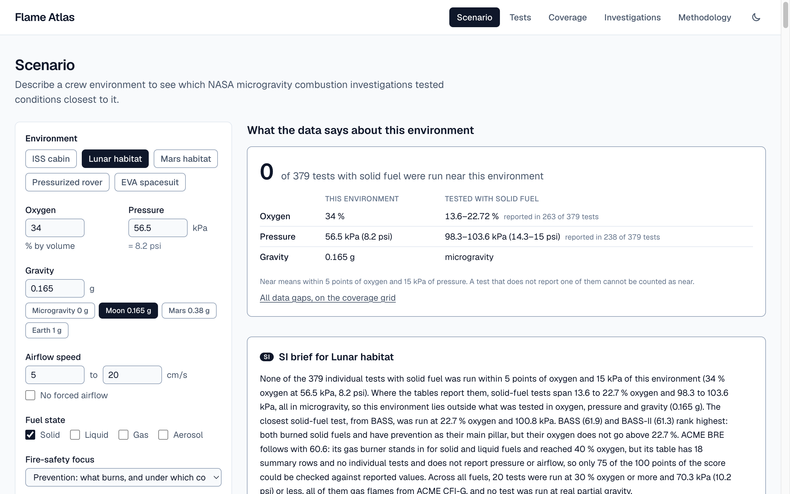
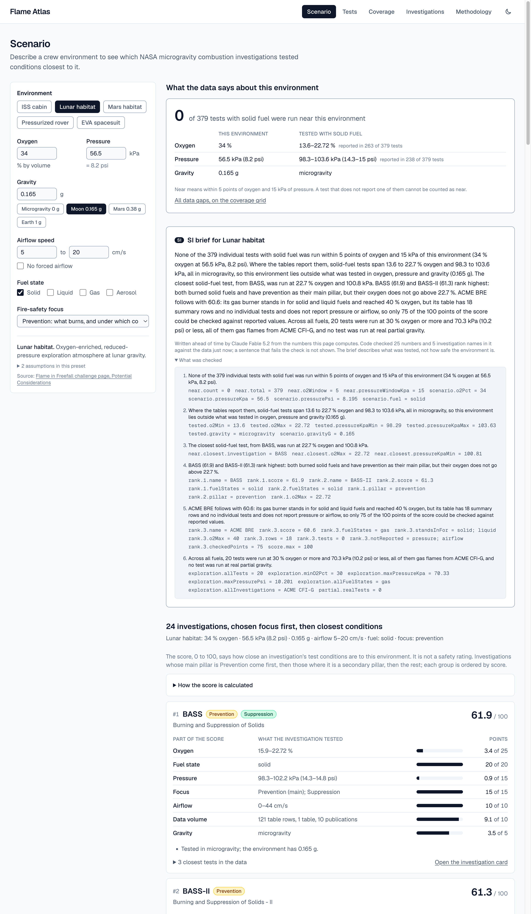
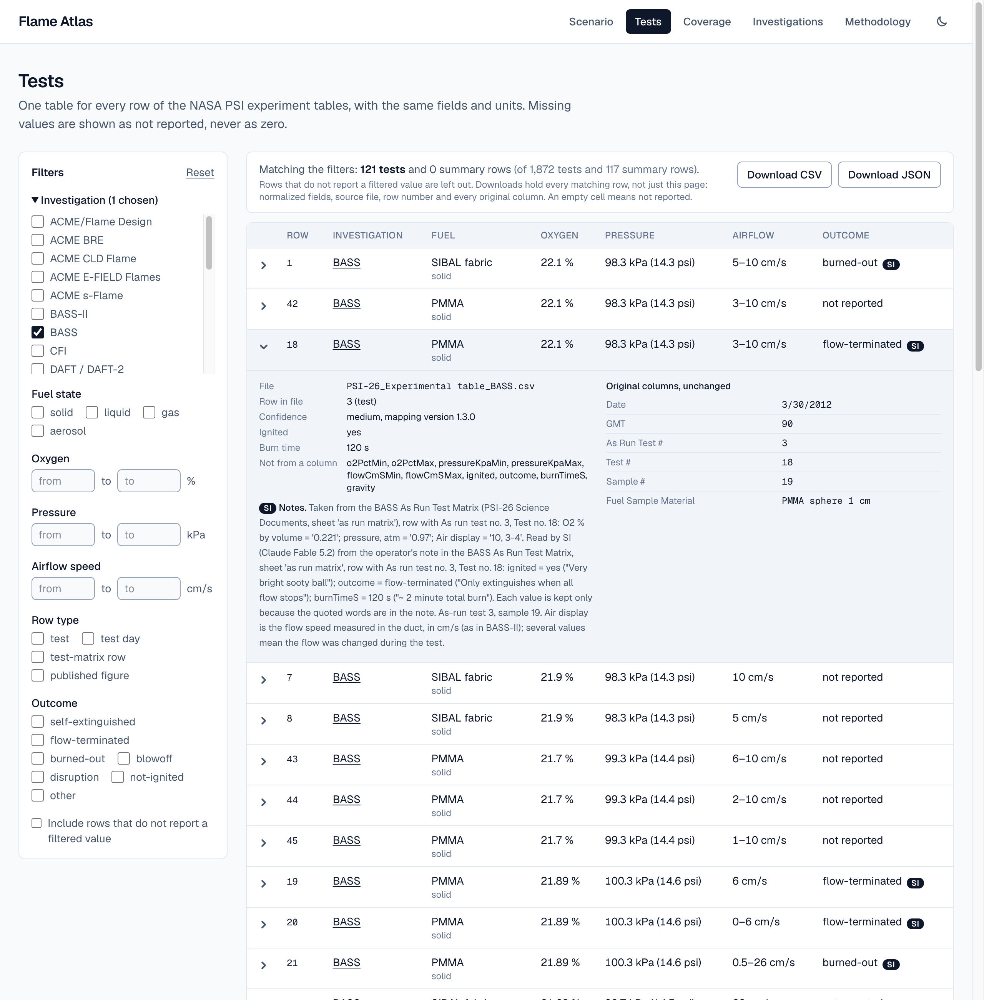
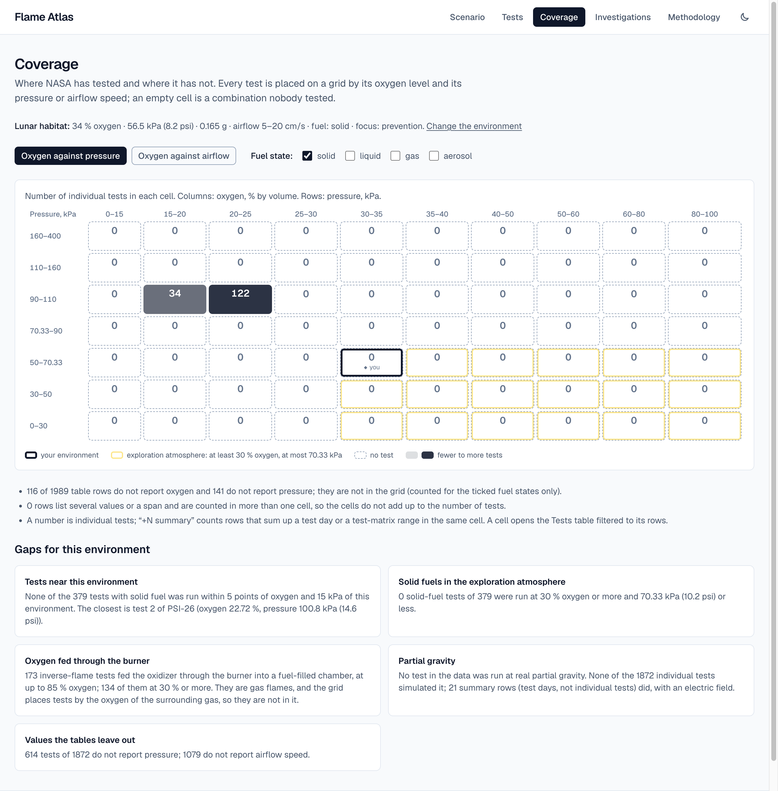

See what NASA has already burned in microgravity, and what it has not, before a crew lives there.

The problem
In a sealed cabin a fire leaves nowhere to go: Apollo 1 in 1967, Mir in 1997. And without buoyancy a flame lives on diffusion and ventilation flow, so it behaves unlike a fire on Earth.
where most experience comes from
the exploration atmosphere, in partial gravity
pure oxygen at low pressure
The solution

A preset (ISS cabin, lunar or Mars habitat, rover, EVA suit) or your own oxygen, pressure, gravity, airflow and fuel.
ISS cabin: 154 of 379 solid-fuel tests. Lunar habitat: 0. The environment sits beside the range NASA actually tested.
An open score in seven parts, each shown with the data behind it, and an SI brief that says it in plain words.
NASA open data
Metadata, 22 experiment tables and science documents of 24 investigations, open under CC0.
Code applies it to every row the same way, converts the units and keeps the original cells.
A value NASA does not report stays “not reported”. It is never a zero and never a guess.
NASA file, row number, original cells and the quoted note. CSV or JSON for modelling.
Reported, of 1,872 tests: oxygen 1,479 · pressure 1,258 · airflow 793 · outcome 623

What the data shows

The same question for the ISS cabin returns 154 solid-fuel tests nearby. For a lunar or Mars habitat it returns none.
SI-powered, and checkable
SI proposed a mapping for each table; code applies it. A script compared the converted oxygen, pressure and airflow values with their source cells: all match within 2 %.
The BASS table has no outcome column. SI read the operators’ free text; a value is kept only when the words it quotes are in the NASA cell, character for character.
Each sentence lists the facts it rests on. The browser re-checks every number and name against the data: 98 numbers, 24 names. A sentence that fails is not shown.
SI never sets a score and never fills a value NASA does not report. No model is called while the site runs.
Scenario screen: the SI brief and, under “What was checked”, the facts behind each sentence.
Impact and next steps
Which of the 24 investigations apply to my cabin, in a minute, with the source of every value beside it.
One documented table of 1,872 tests in common units, as CSV or JSON, ready for predictive models.
The gaps, counted: solid materials in oxygen-enriched low pressure, and partial gravity. Targets for the next flight experiments.
Next: more NASA documents read for each investigation · questions answered with citations · new PSI data added as NASA publishes it.
Data: NASA Physical Sciences Informatics (PSI), Combustion Science, CC0-1.0 · Built with Python, TypeScript, Next.js and Tailwind CSS · SI: Claude (Anthropic), every result checked by code